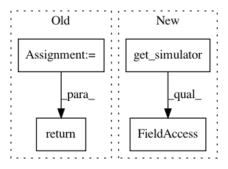

7fcb0c7436d79a7589b0a8de4788b19b088ba686,spynnaker/pyNN/models/neuron/implementations/neuron_impl_standard.py,NeuronImplStandard,get_data,#NeuronImplStandard#Any#Any#Any#,168
Before Change
@overrides(AbstractNeuronImpl.get_data)
def get_data(self, parameters, state_variables, vertex_slice):
return numpy.concatenate([
component.get_data(parameters, state_variables, vertex_slice)
for component in self.__components
])
@overrides(AbstractNeuronImpl.read_data)
def read_data(
self, data, offset, vertex_slice, parameters, state_variables):
After Change
@overrides(AbstractNeuronImpl.get_data)
def get_data(self, parameters, state_variables, vertex_slice):
// Work out the time step per step
ts = globals_variables.get_simulator().machine_time_step
ts /= self.__n_steps_per_timestep
items = [numpy.array([self.__n_steps_per_timestep], dtype="uint32")]
items.extend(
component.get_data(parameters, state_variables, vertex_slice, ts)
In pattern: SUPERPATTERN
Frequency: 3
Non-data size: 4
Instances
Project Name: SpiNNakerManchester/sPyNNaker
Commit Name: 7fcb0c7436d79a7589b0a8de4788b19b088ba686
Time: 2020-04-23
Author: Andrew.Rowley@manchester.ac.uk
File Name: spynnaker/pyNN/models/neuron/implementations/neuron_impl_standard.py
Class Name: NeuronImplStandard
Method Name: get_data
Project Name: SpiNNakerManchester/sPyNNaker
Commit Name: d19ddd7bba3bfac4b763104d5e5d6a06efce1a5a
Time: 2017-12-14
Author: donal.k.fellows@manchester.ac.uk
File Name: spynnaker/pyNN/spynnaker_external_device_plugin_manager.py
Class Name: SpynnakerExternalDevicePluginManager
Method Name: time_scale_factor
Project Name: SpiNNakerManchester/sPyNNaker
Commit Name: d19ddd7bba3bfac4b763104d5e5d6a06efce1a5a
Time: 2017-12-14
Author: donal.k.fellows@manchester.ac.uk
File Name: spynnaker/pyNN/spynnaker_external_device_plugin_manager.py
Class Name: SpynnakerExternalDevicePluginManager
Method Name: machine_time_step